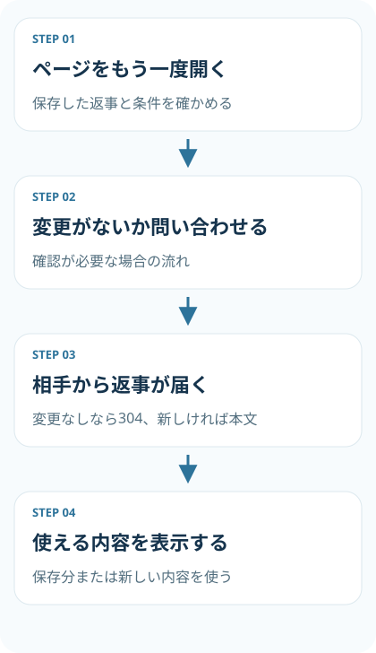

昨日見たお店のページをもう一度開く。見た目は同じ操作でも、画像などを毎回すべて取り直しているとは限りません。前に受け取ったデータを保存し、使えるときに再利用する仕組みがキャッシュです。今回はブラウザが保存したHTTPの返事に絞り、同じ画像をもう一度表示する場面をたどります。
01 — DIGITAL BASICS
キャッシュは、前に受け取った返事の保管場所
ブラウザはサーバーへ情報をお願いし、返事として文章や画像などを受け取ります。キャッシュできる返事なら、後で使えるように保存することがあります。次に同じ情報が必要になったとき、保存分を使えれば、内容を全部受け取り直す手間を減らせます。
たとえばお店のロゴが複数のページに出てくる場合です。毎回ロゴのデータを受け取る代わりに、使える保存分があれば再利用できます。ただし、どんな返事も必ず保存するわけではありません。相手が伝える保存の条件や、ブラウザの判断に関わります。
この節の参考：資料1
02 — DIGITAL BASICS
保存してあるだけでは、使えるとは限らない
サーバーは返事に、どれくらいの間そのまま再利用してよいかなどの条件を添えられます。こうした付加情報がHTTPヘッダーです。Cache-Controlというヘッダーは、その条件を伝えるために使われます。
保存した返事が再利用できる期間内なら、サーバーへ確かめずに使える場合があります。期間を過ぎても、データがその瞬間に別の内容へ変わったという意味ではありません。「そのまま使ってよいか、確認が必要になった」と分けて考えると分かりやすくなります。
この節の参考：資料2

03 — DIGITAL BASICS
変わったかどうかだけを確かめることもある
保存分を使う前に、ブラウザが「この版から変わりましたか」と問い合わせる場合があります。ETagなどは、こうした確認に使う目印です。相手が変更なしと判断した場合は、304という状態コードを返せます。この返事では、同じ本文を丸ごと送り直す必要がありません。
変更されていれば、新しい内容を受け取ります。つまり、キャッシュを使うことと、ネットワークで何も通信しないことは同じではありません。保存分をそのまま使う、相手に確かめてから使う、新しい内容を受け取る、という道筋があります。図は確認が必要な場合を示しています。
04 — DIGITAL BASICS
古い表示が見えたら、原因はキャッシュ？
ページを更新したのに変わらないと、保存分が気になるかもしれません。ただ、表示だけで原因を決めることはできません。ページ自体がまだ更新されていない場合や、サーバーとブラウザの間にある別の保存場所が関わる場合もあります。
ここで説明したブラウザのHTTPキャッシュと、検索サービスが集めたページ情報は別の仕組みです。ブラウザの保存分を消せばGoogleの検索タイトルもすぐ変わる、という関係ではありません。何を、どこが保存しているのかを分けることが、表示の違いを理解する出発点になります。Googleの説明では、検索タイトルの変更を認識するために再クロールと再処理が必要です。
REMEMBER
今日覚えておきたい3つのこと
- 01
キャッシュは、受け取った返事を保存して再利用する仕組み。
- 02
保存分を使う前に、相手へ変更の有無を確かめる場合もある。
- 03
ブラウザの保存分と、検索サービスの収集情報は別の仕組み。
参考資料・情報確認日
情報確認日：2026年11月25日。通信の基本を理解するために一部を簡略化しています。